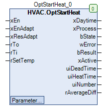

OptStartHeat (FB)¶
FUNCTION_BLOCK OptStartHeat
Kurzbeschreibung¶
Einschaltoptimierung für den Heizbetrieb ( Prinzip: Variable Vorheizzeit )Ziel: Raumtemperatur = Solltemperatur zu Beginn des TagbetriebsTypische Anwendung: Zonenregelkreis mit Heizventil
Darstellung¶

Schnittstellen¶
Eingänge¶
Name Datentyp Wertebereich Initialwert Funktion xEn BOOL FALSE Generelle Freigabe der Einschaltoptimierung xEnAdapt BOOL TRUE Freigabe der Datenablage im historischen Speicher xResAdapt BOOL TRUE Rücksetzung des historischen Speichers rTo REAL Aktuelle Aussentemperatur rTi REAL Aktuelle Raumtemperatur rSetTemp REAL Aktuelle Raumsolltemperatur im Komfort-/Tagbetrieb
Ausgänge¶
Name Datentyp Wertebereich Initialwert Funktion xDaytime BOOL FALSE Freigabe des Komfort-/Tagbetriebs ( Aus = FALSE, Ein = TRUE ) xProcess BOOL FALSE Freigabe - Vorheizprozess ( Aus = FALSE, Ein = TRUE ) bState BYTE 0 Phase des Vorheizprozesses ( 0=Aus/Dekativiert, 1 = Prüfzeit, 2 = Totzeit, 3 = Heizzeit, 4 = Heizzeitende ) wError WORD 0 Fehlerstatus des letzten Vorheizprozesses bResult BYTE 0 Qualität des letzten Vorheizprozesses ( 0 = ungültig, 1 = gut, 2 = normal, 3 = schlecht ) xActive BOOL FALSE Zustand des Uhrkanals der Wochenuhr ( Aus = FALSE, Ein = TRUE ) uiDeadTime UINT 0 Anzeige der aktuellen Totzeitdauer ( min ) uiHeatTime UINT 0 Anzeige der aktuellen Heizzeitdauer ( min ) uiNumber UINT 0 Anzeige der Gesamtanzahl der erfolgreichen Vorheizprozesse rAverageDiff REAL 0.0 Durchschnittliche absolute Raumtemperaturabweichung der letzten 10 erfolgreichen Vorheizprozesse
Sollwerte / Parameter¶
Name Datentyp Wertebereich Initialwert Funktion uiHGMin UINT 30 Minimalwert - Heizgradient ( min/K ) uiHGMax UINT 240 Maximalwert - Heizgradient ( min/K ) uiDTMin UINT 10 Minimalwert - Totzeit ( min ) uiDTMax UINT 180 Maximalwert - Totzeit ( min ) uiHTMin UINT 15 Minimalwert - Heizzeit ( min ) uiHTMax UINT 600 Maximalwert - Heizzeit ( min ) todMonFrom TOD TOD#07:00 Einschaltzeitpunkt - Montag todMonTo TOD TOD#12:00 Ausschaltzeitpunkt - Montag xMonMode BOOL TRUE Modus - Schaltperiode - Montag todTueFrom TOD TOD#07:00 Einschaltzeitpunkt - Dienstag todTueTo TOD TOD#12:00 Ausschaltzeitpunkt - Dienstag xTueMode BOOL TRUE Modus - Schaltperiode - Dienstag todWedFrom TOD TOD#07:00 Einschaltzeitpunkt - Mittwoch todWedTo TOD TOD#12:00 Ausschaltzeitpunkt - Mittwoch xWedMode BOOL TRUE Modus - Schaltperiode - Mittwoch todThuFrom TOD TOD#07:00 Einschaltzeitpunkt - Donnerstag todThuTo TOD TOD#12:00 Ausschaltzeitpunkt - Donnerstag xThuMode BOOL TRUE Modus - Schaltperiode - Donnerstag todFriFrom TOD TOD#07:00 Einschaltzeitpunkt - Freitag todFriTo TOD TOD#12:00 Ausschaltzeitpunkt - Freitag xFriMode BOOL TRUE Modus - Schaltperiode - Freitag todSatFrom TOD TOD#07:00 Einschaltzeitpunkt - Samstag todSatTo TOD TOD#12:00 Ausschaltzeitpunkt - Samstag xSatMode BOOL TRUE Modus - Schaltperiode - Samstag todSunFrom TOD TOD#07:00 Einschaltzeitpunkt - Sonntag todSunTo TOD TOD#12:00 Ausschaltzeitpunkt - Sonntag xSunMode BOOL TRUE Modus - Schaltperiode - Sonntag sNotice STRING ‘Eigene Notiz - zum ändern klicken.’ Bezeichnung - Schaltuhr
Globale Variablen¶
Name Datentyp Wertebereich Initialwert Funktion GV_OPTSTARTHEAT.rTOMinREAL -25.0 Minimalwert - Aussentemperatur ( °C ) GV_OPTSTARTHEAT.rTOMaxREAL 25.0 Maximalwert - Aussentemperatur ( °C ) GV_OPTSTARTHEAT.rTIMinREAL 15.0 Minimalwert - Raumtemperatur ( °C ) GV_OPTSTARTHEAT.rTIMaxREAL 30.0 Maximalwert - Raumtemperatur ( °C ) GV_OPTSTARTHEAT.rDiffSetTempREAL 0.0 Abweichung zur Raumsolltemperatur am Ende des Vorheizprozesses ( K ) GV_OPTSTARTHEAT.rDTDiffTempREAL 0.2 Erhöhung der Raumtemperatur zur Erkennung des Endes der Totzeit ( K ) GV_OPTSTARTHEAT.uiPHMaxTimeUINT 720 Maximale Zeitdauer des Vorheizprozesses GV_OPTSTARTHEAT.rLimitResultWellREAL 0.5 Ergebnisanzeige: Raumtemperaturabweichung - Grenzwert für einen guten Vorheizprozess GV_OPTSTARTHEAT.rLimitResultNormalREAL 1.0 Ergebnisanzeige: Raumtemperaturabweichung - Grenzwert für einen normalen Vorheizprozess
Funktionsbeschreibung¶
Der Ausgang xDaytime wird bei generell freigegebener Einschaltoptimierung ( xEn = TRUE ) in Abhängigkeit von
den historischen Daten, der aktuellen Aussentemperatur, der aktuellen Raumtemperatur und der aktuellen Solltemperatur
für den Tag-/Komfortbetrieb vor dem geplanten Beginn des Komfort-/Tagbetriebs aktiviert.
Diese Vorheizung bewirkt, dass die Raumtemperatur zu Beginn des Tagbetriebs bereits der gewünschten Solltemperatur entspricht.
Die dazu nötige Vorheizzeit wird für jeden Vorheizprozess individuell neu berechnet, die tatsächliche Vorheizzeit
fliesst zusätzlich in die historischen Daten ein.
Es sind tagesübergreifende Vorheizprozesse möglich.
Die Einschaltoptimierung dient der Energieeinsparung und der Erhöhung des Bedienkomforts.
Die für die Einschaltoptimierung relevanten Komponenten werden alle 60s abgearbeitet.
Der Vorheizprozess gliedert sich in vier Zeitabschnitte.
Sie werden bei jedem erfolgreichen Vorheizprozess nacheinander durchlaufen.
Der Vorheizprozess kann vor, genau zum oder nach dem Einschaltpunkt ( = Übergang in den Komfort-/Tagbetrieb ) enden.
Prüfzeit (bState = 1)¶
Die Prüfzeit dient zur zyklischen Prüfung ( alle 60s), ob die Bedingungen für die Freigabe der Vorheizung erfüllt sind.
Sie beginnt, falls gleichzeitig folgende Bedingungen erfüllt sind:
1) Der Vorheizprozess ist nicht aktiv ( xProcess = FALSE )
2) Die Wochenuhr ist nicht aktiv ( xActive = FALSE )
3) Es existiert ein gültiger nächster Einschaltpunkt
Sie endet regelgerecht, falls die Bedingungen für die Freigabe der Vorheizung erfüllt sind ( = Beginn der Totzeit ).
Sie endet in jedem Fall, falls der nächste gültige Einschaltpunkt gleich der aktuellen Uhrzeit ist.
Totzeit (bState = 2)¶
Die Totzeit dient zur Vorkonditionierung der Beheizung.
Sie beginnt mit dem regelgerechten Ende der Prüfzeit.
Sie endet regelgerecht, falls die aktuelle Raumtemperatur rTi die Raumtemperatur zu Beginn der Totzeit um die einstellbare
Differenz
GV_OPTSTARTHEAT.rDTDiffTemp dauerhaft während einer Zeitdauer von mindestens 120s überschreitet ( = Beginn der Heizzeit ).Sie endet in jedem Fall, falls der nächste gültige Einschaltpunkt gleich der aktuellen Uhrzeit ist.
Heizzeit (bState = 3)¶
Die Heizzeit dient zur Vorheizung der Zone.
Sie beginnt mit dem regelgerechten Ende der Totzeit.
Sie endet regelgerecht, falls sich die aktuelle Raumtemperatur rTI der aktuelle Raumsolltemperatur im Komfort-/Tagbetrieb rSetTemp
dauerhaft während einer Zeitdauer von mindestens 120s bis auf eine Differenz kleiner als die globale Variable
GV_OPTSTARTHEAT.rDiffSetTemp annähert.Sie endet, falls eine abfallende Signalflanke am Zustand des Uhrkanal der Wochenuhr xActive erkannt wird.
Sie endet, falls die aktuelle Heizzeitdauer den einstellbaren Maximalwert uiHTMax überschreitet.
Heizzeitende (bState = 4)¶
Das Heizzeitende dient dem Abschluss des erfolgreichen Vorheizprozesses. Die historischen Daten werden, sofern keine Grenzwerte verletzt sind,
aktualisiert, falls die Freigabe der Datenablage im historischen Speicher ( xEnAdapt ) aktiv ist.
Sie beginnt mit dem regelgerechten Ende der Heizzeit.
Freigabe xEn¶
Dieser Eingang dient der generelle Freigabe der Einschaltoptimierung ( xEn = TRUE ). Im gesperrten Zustand ( xEn = FALSE )
werden die Ausgänge wie folgt definiert:
Ausgang Zustand/Wert Hinweise xDaytime FALSE xProcess FALSE bState 0 wError 0 bResult 0 uiDeadTime 0 uiHeatTime 0 uiNumber 0 rAverageDiff 0
Die historischen Daten bleiben auch im gesperrten Zustand erhalten.
Dieser Eingang kann auch zur Aufschaltung von Fühlerstörungen ( Störung - Raumtemperaturfühler, Störung Außentemperaturfühler )
oder für den Betrieb der Zone in der Nutzzeitverlängerung verwendet werden.
Freigabe xEnAdapt¶
Dieser Eingang dient der Freigabe der Datenablage im historischen Speicher ( xEnAdapt = TRUE, Voraussetzung: xEn = TRUE ).
Nach jedem erfolgreichen Vorheizprozess werden die relevanten Parameter abgelegt und stehen somit beim nächsten Vorheizprozess
wieder zur Verfügung.
Im gesperrten Zustand ( xEnAdapt = FALSE ) findet keine Datenablage statt.
Freigabe xResAdapt¶
Dieser Eingang dient der Initialisierung des historischen Speichers bei jeder ansteigenden Signalflanke ( Voraussetzung: xEn = TRUE ).
Speicher Zustand/Wert Hinweise Heizgradienten uiHGMax Totzeiten uiDTMax Anzahl der Vorheizprozesse 0
Zusätzlich werden der Zwischenspeicher für die durchschnittliche absolute Raumtemperaturabweichung der letzten 10 erfolgreichen
Vorheizprozesse und der Datenspeicher für die aktuellen Daten zurück gesetzt.
Dieser Eingang kann im Kombination mit dem Ausgang rAverageDiff ( Durchschnittliche absolute Raumtemperaturabweichung der
letzten 10 erfolgreichen Vorheizprozesse ) eingesetzt werden, um bei größeren Abweichungen eine Neuinitialisierung der
historischen und aktuellen Daten zu bewirken.
Eingang rTo¶
Dieser Eingang dient zur Erfassung der aktuellen Außentemperatur.
Sie wird für die Einschaltoptimierung zusätzlich zeitlich gefiltert und begrenzt ( Minimalwert =
GV_OPTSTARTHEAT.rTOMin, Maximalwert = GV_OPTSTARTHEAT.rTOMax ).Eingang rTi¶
Dieser Eingang dient zur Erfassung der aktuellen Raumtemperatur.
Sie wird für die Einschaltoptimierung zusätzlich zeitlich gefiltert und begrenzt ( Minimalwert =
GV_OPTSTARTHEAT.rTIMin, Maximalwert = GV_OPTSTARTHEAT.rTIMax ).Eingang rSetTemp¶
Dieser Eingang dient zur Erfassung der aktuellen Raumsolltemperatur für den Komfort-/Tagbetrieb.
Bei jeder Änderung der Solltemperatur erfolgt ein Rücksetzung in den Grundzustand ( siehe Freigabe xEn - gesperrter Zustand ).
Ausgang xDaytime¶
Dieser Ausgang dient zur Freigabe des Komfort-/Tagbetriebs ( Aus = FALSE, Ein = TRUE ) durch die Einschaltoptimierung.
Er wird beim Übergang von der Prüfzeit in die Totzeit aktiviert.
Er wird deaktiviert, falls der nächstgültige Einschaltpunkt erreicht wird.
Ausgang xProcess¶
Dieser Ausgang dient zur Anzeige des aktiven Vorheizprozesses ( Aus = FALSE, Ein = TRUE ).
Er ist aktiv, falls sich der Vorheizprozess in den Phasen 1 - 4 befindet und / oder der Ausgang xDaytime aktiv ist.
Ausgang bState¶
Dieser Ausgang dient zur Anzeige der aktiven Phase des Vorheizprozesses.
Wert Phase 0 Aus / Deaktiviert 1 Prüfzeit aktiv 2 Totzeit aktiv 3 Heizzeit aktiv 4 Heizzeitende aktiv
Ausgang wError¶
Dieser Ausgang dient zur Anzeige von Warnungen / Fehlern während des letzten Vorheizprozesses.
Jeder Meldung ist dabei ein Bit ( Bit = 0 = kein Fehler, Bit = 1 = Warnung / Fehler aktiv ) zugeordnet.
Dieser Ausgang wird permanent aktualisiert.
Bei jeder Änderung wird zusätzlich das Datum / die aktuelle Uhrzeit erfasst.
Dieser Ausgang wird stets zum Beginn der Prüfzeit mit 0 ( = kein Fehler ) initialisiert.
Bei jedem Auftreten eines Fehlers wird der Vorheizprozess gestoppt und die Phase ‘Aus / Deaktiviert’ eingeleitet.
Bei jedem Auftreten einer Warnung wird der Ausgang wError aktualisiert.
Bit Ursache Fehlertyp Hinweise 1 Überschreitung der maximalen Heizzeit Fehler 4 Grenzwertverletzung Heizgradient Warnung 5 Grenzwertverletzung Totzeit Warnung 6 Unterschreitung der minimalen Heizzeit Warnung
Ausgang bResult¶
Dieser Ausgang dient zur Anzeige der Qualität des letzten erfolgreichen Vorheizprozesses.
Der Ausgang wird im Einschaltpunkt ( = Übergang in den Komfort-/Tagbetrieb ) bei Bedarf aktualisiert.
Das absolute Betrag aus der Berechnung von rSetTemp -
GV_OPTSTARTHEAT.rDiffSetTemp - rTi wird für die Bewertung verwandt.Dieser Ausgang wird stets zum Beginn der Prüfzeit mit 0 ( = kein Ergebnis ) initialisiert.
Ergebnis Grenzwert bResult Hinweise kleiner als GV_OPTSTARTHEAT.rLimitResultWell1 Guter Vorheizprozess kleiner als GV_OPTSTARTHEAT.rLimitResultNormal2 Normaler Vorheizprozess grösser oder gleich GV_OPTSTARTHEAT.rLimitResultNormal3 Schlechter Vorheizprozess
Ausgang xActive¶
Dieser Ausgang dient zur Anzeige des Zustands des Uhrkanals der Wochenuhr ( Aus = FALSE, Ein = TRUE ).
Die Wochenuhr wird permanent unabhängig vom Zustand von xEn ( = Generelle Freigabe der Einschaltoptimierung ) aktualisiert.
Bei jeder Änderung der Einstellungen der Wochenuhr erfolgt ein Rücksetzung in den Grundzustand ( siehe Freigabe xEn - gesperrter Zustand ).
Ausgang uiDeadTime¶
Dieser Ausgang dient zur Anzeige der aktuellen Totzeitdauer ( min ).
Dieser Ausgang wird stets zum Beginn der Prüfzeit mit 0 min initialisiert.
Ausgang uiHeatTime¶
Dieser Ausgang dient zur Anzeige der aktuellen Heizzeitdauer ( min ).
Dieser Ausgang wird stets zum Beginn der Prüfzeit mit 0 min initialisiert.
Ausgang uiNumber¶
Dieser Ausgang dient zur Anzeige der Gesamtanzahl der erfolgreichen Vorheizprozesse.
Ausgang rAverageDiff¶
Dieser Ausgang dient zur Anzeige der durchschnittliche absoluten Raumtemperaturabweichung der letzten 10 erfolgreichen Vorheizprozesse.
Dieser Ausgang wird immer nach der Aktualisierung des Ausgangs bResult aktualisiert.
Dieser Ausgang wird bei jeder ansteigenden Signalflanke am Eingang xResAdapt mit 0 K initialisiert.
Dieser Ausgang kann im Kombination mit dem Eingang xResAdapt eingesetzt werden, um bei größeren Abweichungen eine Neuinitialisierung der
historischen Daten zu bewirken.
1. Vorheizprozess¶
Nach dem Softwaredownload bzw. nach jeder ansteigenden Signalflanke am Eingang xResAdapt werden die historischen Daten neu initialisiert.
Die Totzeiten werden dabei mit dem Parameter uiDTMax, die Heizgradienten mit dem Parameter uiHGMax und die Anzahl der erfolgreichen
Vorheizprozess mit dem Wert 0 beschrieben.
Parameter uiHGMin¶
Dieser Parameter dient zur Festlegung des minimal zulässigen Heizgradienten ( min / K ).
Er dient zur Überprüfung von Grenzwertverletzungen. Im Falle einer Grenzwertverletzung werden die historischen Daten nicht aktualisiert.
Parameter uiHGMax¶
Dieser Parameter dient zur Festlegung des maximal zulässigen Heizgradienten ( min / K ).
Er dient zur Überprüfung von Grenzwertverletzungen. Im Falle einer Grenzwertverletzung werden die historischen Daten nicht aktualisiert.
Parameter uiDTMin¶
Dieser Parameter dient zur Festlegung der minimal zulässigen Totzeit ( min ).
Er dient zur Überprüfung von Grenzwertverletzungen. Im Falle einer Grenzwertverletzung werden die historischen Daten nicht aktualisiert.
Parameter uiDTMax¶
Dieser Parameter dient zur Festlegung der maximal zulässigen Totzeit ( min ).
Er dient zur Überprüfung von Grenzwertverletzungen. Im Falle einer Grenzwertverletzung werden die historischen Daten nicht aktualisiert.
Parameter uiHTMin¶
Dieser Parameter dient zur Festlegung der minimal zulässigen Heizzeit ( min ).
Er dient zur Überprüfung von Grenzwertverletzungen.
Parameter uiHTMax¶
Dieser Parameter dient zur Festlegung der maximal zulässigen Heizzeit ( min ).
Er dient zur Überprüfung von Grenzwertverletzungen.
Bei jedem Auftreten einer Grenzwertverletzung wird der Vorheizprozess gestoppt und die Phase ‘Aus / Deaktiviert’ eingeleitet.
Parameter todMonFrom - sNotice¶
Dieser Parameter dienen zur Einstellung der Wochenuhr. Die generelle Funktionsweise ist detailiert der Beschreibung des
Funktionsbausteins ‘Clock7d1Ch’ zu entnehmen.
Globale Variable GV_OPTSTARTHEAT.rTOMin¶
Diese globale Variable dient zur Festlegung der minimal zulässigen Aussentemperatur ( °C ).
Sie dient zur Überprüfung von und Korrektur bei Grenzwertverletzungen.
Globale Variable GV_OPTSTARTHEAT.rTOMax¶
Diese globale Variable dient zur Festlegung der maximal zulässigen Aussentemperatur ( °C ).
Sie dient zur Überprüfung von und Korrektur bei Grenzwertverletzungen.
Globale Variable GV_OPTSTARTHEAT.rTIMin¶
Diese globale Variable dient zur Festlegung der minimal zulässigen Raumtemperatur ( °C ).
Sie dient zur Überprüfung von und Korrektur bei Grenzwertverletzungen.
Globale Variable GV_OPTSTARTHEAT.rTIMax¶
Diese globale Variable dient zur Festlegung der maximal zulässigen Raumtemperatur ( °C ).
Sie dient zur Überprüfung von und Korrektur bei Grenzwertverletzungen.
Globale Variable GV_OPTSTARTHEAT.rDiffSetTemp¶
Diese globale Variable dient zur Festlegung der Abweichung zur Raumsolltemperatur am Ende des Vorheizprozesses ( K ).
Sie legt fest, wie weit sich die Raumtemperatur der Solltemperatur im Tag-/Komfortbetrieb annähern muss, um den
aktiven Vorheizprozess zu beenden.
Globale Variable GV_OPTSTARTHEAT.rDTDiffTemp¶
Diese globale Variable dient zur Festlegung der Erhöhung der Raumtemperatur zur Erkennung des Endes der Totzeit ( K ).
Sie legt fest, wie weit sich die Raumtemperatur während der Totzeit dauerhaft erhöhen muss, um die Heizzeit einzuleiten.
Globale Variable GV_OPTSTARTHEAT.uiPHMaxTime¶
Diese globale Variable dient zur Festlegung der maximalen Zeitdauer des Vorheizprozesses.
Sie wird für interne Berechnungen verwandt.
Globale Variable GV_OPTSTARTHEAT.rLimitResultWell¶
Diese globale Variable dient zur Festlegung des Grenzwerts ‘Guter Vorheizprozess’ für die Qualitätsanzeige bResult.
Globale Variable GV_OPTSTARTHEAT.rLimitResultNormal¶
Diese globale Variable dient zur Festlegung des Grenzwerts ‘Normaler Vorheizprozess’ für die Qualitätsanzeige bResult.
Visualisierung¶
Codesys¶
- InOut:
Scope Name Type Initial Comment Input xEn BOOL FALSE Freigabe ( Aus = FALSE, Ein = TRUE ), FALSE bei Nutzzeitverlängerung, Fühlerstörung, etc., bitte extern beschalten xEnAdapt BOOL TRUE Freigabe - Adaption ( Aus = FALSE, Ein = TRUE ) xResAdapt BOOL FALSE Rücksetzung - Adaption ( Aus = FALSE, Ein = TRUE ) rTo REAL Aktuelle Außentemperatur rTi REAL Aktuelle Raumtemperatur rSetTemp REAL Aktuelle Solltemperatur im Tag- / Komfortbetrieb Output xDaytime BOOL FALSE Freigabe des Komfort-/Tagbetriebs ( Aus = FALSE, Ein = TRUE ) xProcess BOOL FALSE Freigabe - Vorheizprozess ( Aus = FALSE, Ein = TRUE ) bState BYTE 0 Phase des Vorheizprozesses ( 0=Aus/Dekativiert, 1 = Prüfzeit, 2 = Totzeit, 3 = Heizzeit, 4 = Heizzeitende ) wError WORD 0 Fehlerstatus des letzten Vorheizprozesses bResult BYTE 0 Qualität des letzten Vorheizprozesses ( 0 = ungültig, 1 = gut, 2 = normal, 3 = schlecht ) xActive BOOL FALSE Zustand des Uhrkanals der Wochenuhr uiDeadTime UINT 0 Anzeige der aktuellen Totzeitdauer ( min ) uiHeatTime UINT 0 Anzeige der aktuellen Heizzeitdauer ( min ) uiNumber UINT 0 Anzeige der Gesamtanzahl der erfolgreichen Vorheizprozesse rAverageDiff REAL 0.0 Durchschnittliche absolute Raumtemperaturabweichung der letzten 10 erfolgreichen Vorheizprozesse Input uiHGMin UINT 30 Minimalwert - Heizgradient ( min/K ) uiHGMax UINT 240 Maximalwert - Heizgradient ( min/K ) uiDTMin UINT 10 Minimalwert - Totzeit ( min ) uiDTMax UINT 180 Maximalwert - Totzeit ( min ) uiHTMin UINT 15 Minimalwert - Heizzeit ( min ) uiHTMax UINT 600 Maximalwert - Heizzeit ( min ) todMonFrom TOD TIME_OF_DAY#7:0 Einschaltzeitpunkt - Montag todMonTo TOD TIME_OF_DAY#18:0 Ausschaltzeitpunkt - Montag xMonMode BOOL TRUE Modus - Schaltperiode - Montag todTueFrom TOD TIME_OF_DAY#7:0 Einschaltzeitpunkt - Dienstag todTueTo TOD TIME_OF_DAY#18:0 Ausschaltzeitpunkt - Dienstag xTueMode BOOL TRUE Modus - Schaltperiode - Dienstag todWedFrom TOD TIME_OF_DAY#7:0 Einschaltzeitpunkt - Mittwoch todWedTo TOD TIME_OF_DAY#18:0 Ausschaltzeitpunkt - Mittwoch xWedMode BOOL TRUE Modus - Schaltperiode - Mittwoch todThuFrom TOD TIME_OF_DAY#7:0 Einschaltzeitpunkt - Donnerstag todThuTo TOD TIME_OF_DAY#18:0 Ausschaltzeitpunkt - Donnerstag xThuMode BOOL TRUE Modus - Schaltperiode - Donnerstag todFriFrom TOD TIME_OF_DAY#7:0 Einschaltzeitpunkt - Freitag todFriTo TOD TIME_OF_DAY#18:0 Ausschaltzeitpunkt - Freitag xFriMode BOOL TRUE Modus - Schaltperiode - Freitag todSatFrom TOD TIME_OF_DAY#7:0 Einschaltzeitpunkt - Samstag todSatTo TOD TIME_OF_DAY#18:0 Ausschaltzeitpunkt - Samstag xSatMode BOOL TRUE Modus - Schaltperiode - Samstag todSunFrom TOD TIME_OF_DAY#7:0 Einschaltzeitpunkt - Sonntag todSunTo TOD TIME_OF_DAY#18:0 Ausschaltzeitpunkt - Sonntag xSunMode BOOL TRUE Modus - Schaltperiode - Sonntag sNotice STRING ‘Notice’ Bezeichnung - Schaltuhr